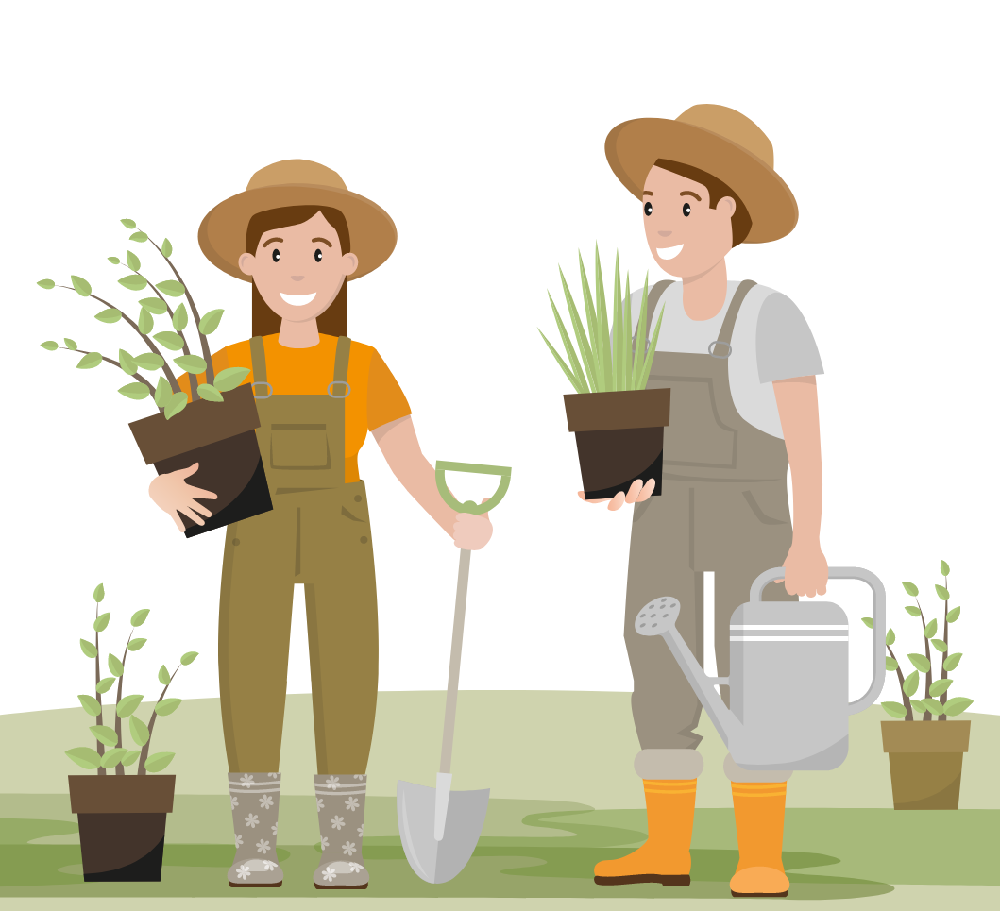

Gardening can require a lot of work, especially during the rainy season. Resources such as fertilizer are also needed. So, this year, I set up a list of 3 challenges. Stay tuned to see how it turned out. :-)
Even on a small patch like mine weeds are always a problem. When planting in raised beds, one of the problems is that the beds and paths don't have clear borders so one ends up weeding the parts that don't really require it.
When areas where you grow vegetables and their adjascent paths are not clearly separated, you end up losing fertilizer because if you till the soil with motocultivator some of it eventually spills over paths.
Raised beds, which are required in rainy climates, eventually get flattened and hardened, making tilling neccessary each season. After that, the beds have to be formed again, which is a lot of work.
Until then, have fun gardening!
©2022 Made by Kat